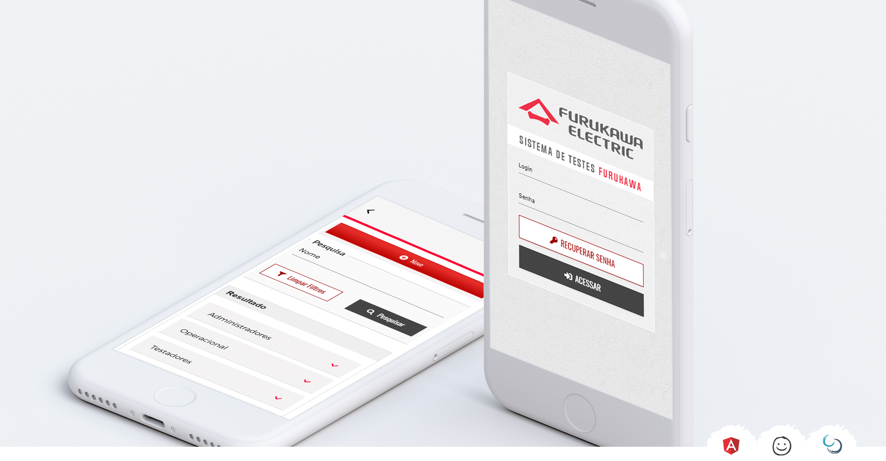

With its growing production of fiber optic cables, the search for
automation of factory tests became present within Furukawa.
Below I will describe the process carried out within this complex project due to its individuality and usability test execution.
Below I will describe the process carried out within this complex project due to its individuality and usability test execution.
Validating the problem
First phase of the project I like to understand and validate the problem. Throughout the process, other items will appear according to the tests and validations performed with the customer, especially when it comes to SCRUM development.- Old test system was installation software.
- Difficult maintenance when needed for an update.
- The tester's user response was unclear about the test results.
- Design was not designed for current monitor resolutions.
- The factory's internal network is only accessed through VPN, blocking access to any external file.
Solutions
- Develop online access software in which the update becomes unique for everyone.
- User study for a clearer interface for the necessary commands.
- Responsible design to be durable over the years.
- Import all necessary material in the project so that there are no blockages during the execution of tests.
Lo-Fi Wireframe
Lo-fi wireframe are the blueprints of the project, they connect the information architecture with the visual design. Below has some examples of the wireframes carried out on this project. Featured to the customer primarily for navigation approval and user testing - after all user testing can be easy and cheap and must be done from the beginning of the project to ensure the success of the solutions presented.Visual Design
Within this project we need to make the design's system attractive to users, bringing users' attention to colors keeping it as minimal as possible. The Furukawa Electric brand manual give us the Furukawa Red, which brings an interesting challenge for the project - a traffic light paradox. Inside the UX the Furukawa Red can bring us a reference to error, danger, delete. In which case of this project we want to move away from the user. To solve this problem, I brought red as the color heart of the application, highlighted button, present on all screens.